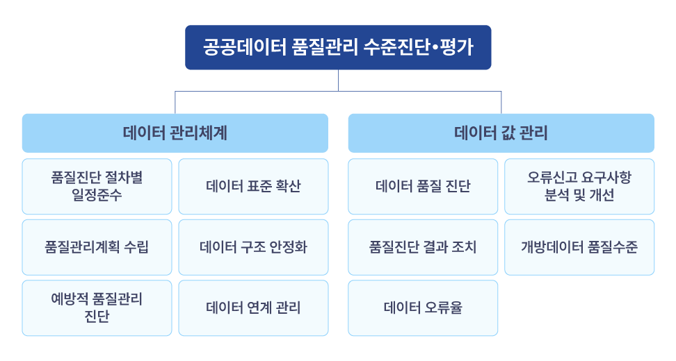
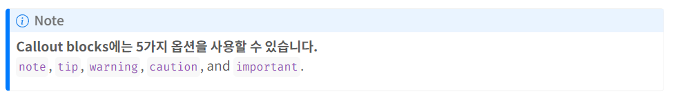
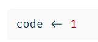

Quarto website의 폰트를 scss를 수정하여 바꾸기
windows에서 wsl + docker + Rstudio-server 환경 구축 방법을 정리

공공데이터 품질관리에 대한 개념과 제가 경험한 평가 대응 방법을 공유합니다.

Quarto에서 Callout Blocks을 사용하여 효과적인 디지털 글쓰기

qmd 문서에서 여러 언어에 맞는 디자인을 적용하여 코드 블럭 작성하는 방법입니다.
Quarto에서 만든 웹사이트, 블로그를 GitHub Pages 기능을 활용해 배포하는 방법입니다.
Rstudio에서 git과 github를 연동하는 방법입니다.
window 환경과 리눅스(WSL) 환경에서 R과 conda를 설치하는 방법입니다.
--- title: "Posts" listing: contents: posts sort: "date desc" type: default categories: true comments: false ---